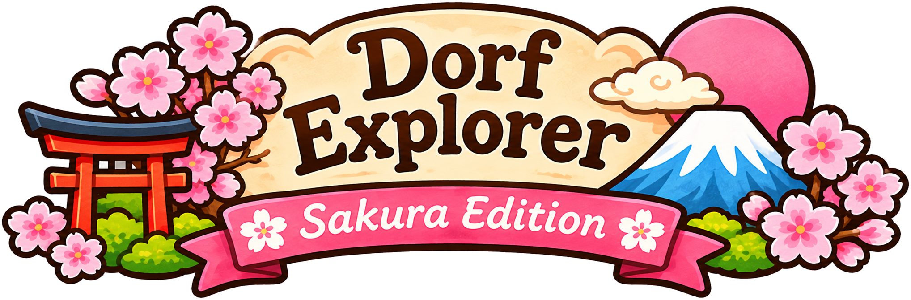

Scorecard
Game History
Campaign
Start at the bottom. Select a highlighted circle to spend a movement point or a highlighted flower to spend cherry blossoms. Boxes open automatically for free when you reach an adjacent space.
Achievements
Mark achievements earned from cards as you complete them.